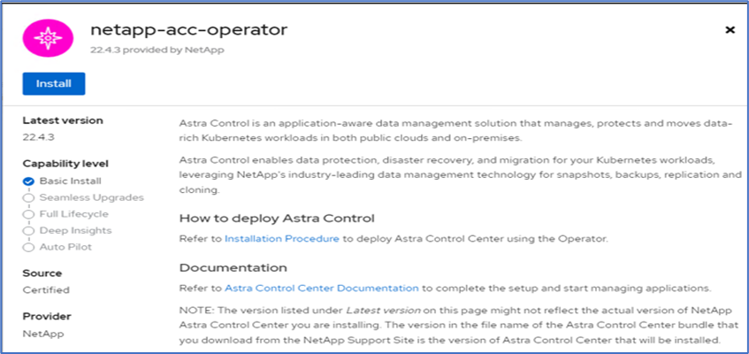
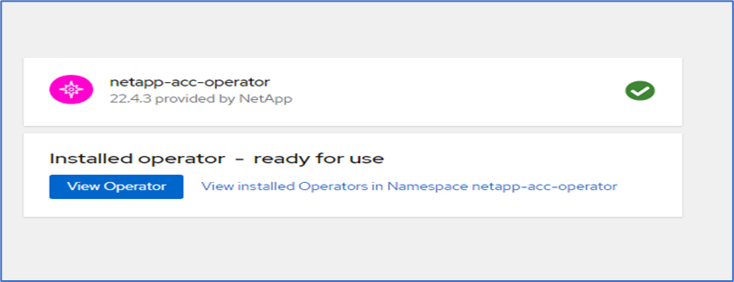
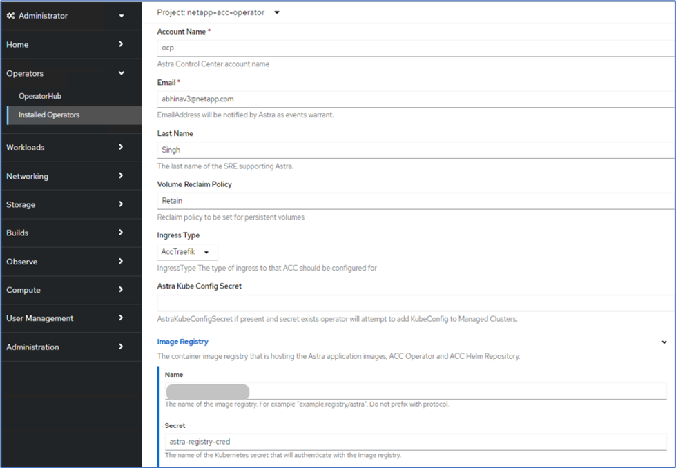
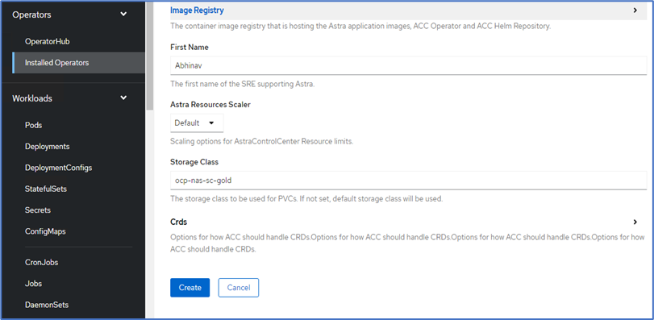
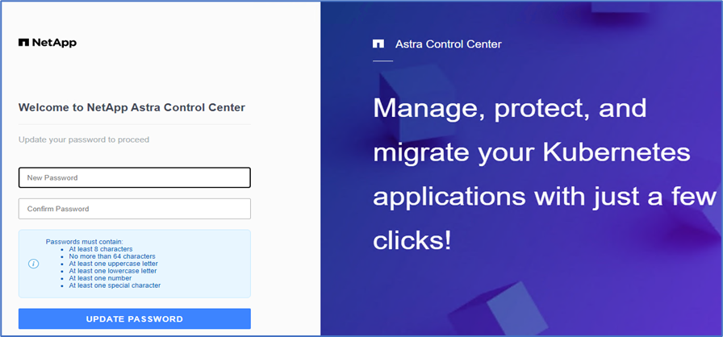
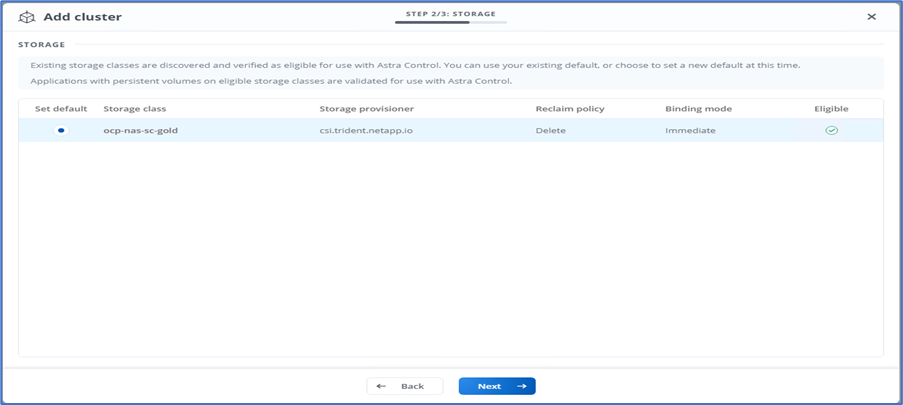
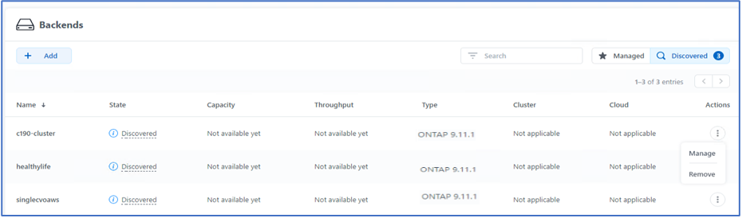
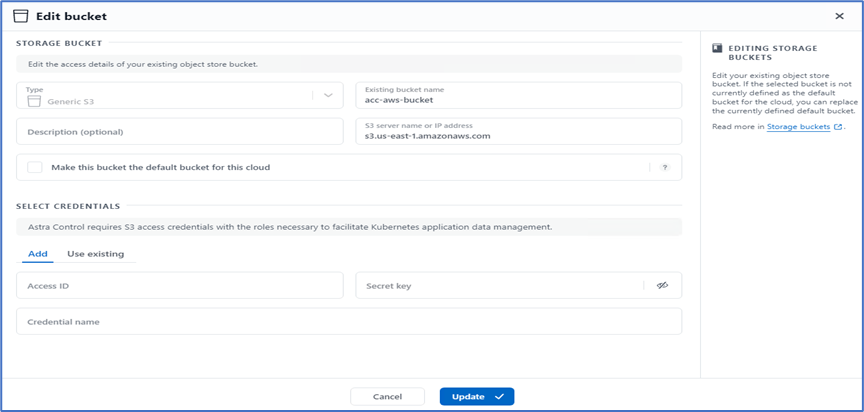
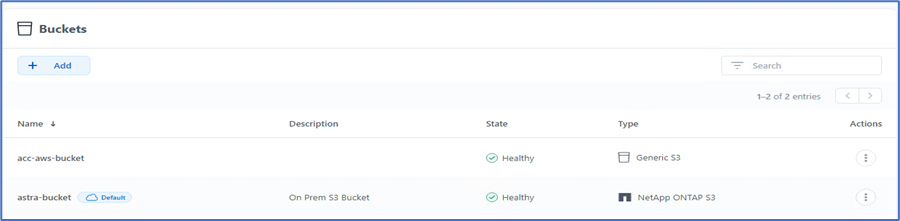

Demander de modifier un document
Demander de modifier un document Modifier sur GitHub
Modifier sur GitHub Guide des contributeurs
Guide des contributeursInstallation d’Astra Control Center sur OpenShift Container Platform
Contributeurs
Vous pouvez installer Astra Control Center sur un cluster OpenShift qui s’exécute sur FlexPod ou sur AWS avec un système de stockage back-end Cloud Volumes ONTAP. Dans cette solution, Astra Control Center est déployé sur le cluster OpenShift bare-Metal.
Le centre de contrôle Astra peut être installé selon la procédure standard décrite "ici" Ou depuis Red Hat OpenShift OperatorHub. L’opérateur de contrôle Astra est un opérateur certifié Red Hat. Dans cette solution, Astra Control Center est installé à l’aide de Red Hat OperatorHub.
De l’environnement
-
Astra Control Center prend en charge plusieurs distributions Kubernetes. Pour Red Hat OpenShift, les versions prises en charge incluent Red Hat OpenShift Container Platform 4.8 ou 4.9.
-
Astra Control Center requiert les ressources suivantes en plus des exigences de l’environnement et de l’utilisateur final en matière de ressources applicatives :
| Composants | Conditions requises |
|---|---|
Capacité du système back-end |
Au moins 500 Go disponibles |
Nœuds worker |
Au moins 3 nœuds workers et doté de 4 cœurs de processeurs et de 12 Go de RAM chacun |
Adresse de nom de domaine complet (FQDN) |
Une adresse FQDN pour Astra Control Center |
Astra Trident |
Astra Trident 21.04 ou plus récent installé et configuré |
Contrôleur d’entrée ou équilibreur de charge |
Configurez le contrôleur d’entrée pour exposer Astra Control Center avec un URL ou un équilibreur de charge afin de fournir une adresse IP qui sera définie pour le FQDN |
-
Vous devez disposer d’un registre d’images privées existant dans lequel vous pouvez pousser les images de création d’Astra Control Center. Vous devez fournir l’URL du registre d’images où vous téléchargez les images.

|
Certaines images sont extraites lors de l’exécution de certains flux de travail et des conteneurs sont créés et détruits si nécessaire. |
-
Avec Astra Control Center, il est nécessaire de créer une classe de stockage et de la définir comme classe de stockage par défaut. Le centre de contrôle Astra prend en charge les pilotes ONTAP suivants fournis par Astra Trident :
-
ontap-nas
-
ontap-nas-flexgroup
-
ontap-san
-
ontap-san-économie
-
|
|
Nous supposons qu’Astra Trident est installé et configuré avec un système back-end ONTAP, et qu’une classe de stockage par défaut est également définie. |
-
En ce qui concerne le clonage d’applications dans les environnements OpenShift, Astra Control Center doit permettre à OpenShift de monter des volumes et de modifier la propriété des fichiers. Pour modifier la export policy ONTAP pour permettre ces opérations, lancer les commandes suivantes :
export-policy rule modify -vserver <storage virtual machine name> -policyname <policy name> -ruleindex 1 -superuser sys export-policy rule modify -vserver <storage virtual machine name> -policyname <policy name> -ruleindex 1 -anon 65534
|
|
Pour ajouter un deuxième environnement opérationnel OpenShift comme ressource de calcul gérée, assurez-vous que la fonctionnalité de snapshot de volume Astra Trident est activée. Pour activer et tester des copies Snapshot de volume avec Astra Trident, consultez le responsable "Instructions d’Astra Trident". |
-
A "Classe VolumeSnapClass" Doit être configuré sur tous les clusters Kubernetes à partir de l’emplacement de gestion des applications. Ceci peut également inclure le cluster K8s sur lequel Astra Control Center est installé. Astra Control Center peut gérer les applications du cluster K8s sur lequel il est exécuté.
De gestion des applications
-
Licence. pour gérer des applications à l’aide d’Astra Control Center, vous avez besoin d’une licence Astra Control Center.
-
Espaces de noms. Un espace de noms est la plus grande entité qui peut être gérée en tant qu’application par Astra Control Center. Vous pouvez choisir de filtrer les composants en fonction des étiquettes d’application et des étiquettes personnalisées dans un espace de noms existant et de gérer un sous-ensemble de ressources en tant qu’application.
-
StorageClass. si vous installez une application avec une classe de stockage définie explicitement et que vous devez cloner l’application, le cluster cible pour l’opération de clonage doit avoir la classe de stockage spécifiée à l’origine. Le clonage d’une application avec une classe de stockage explicitement définie vers un cluster ne présentant pas la même classe de stockage échoue.
-
Ressources Kubernetes. les applications qui utilisent des ressources Kubernetes non capturées par Astra Control peuvent ne pas disposer de fonctionnalités complètes de gestion des données d’application. Astra Control peut capturer les ressources Kubernetes suivantes :
| Ressources Kubernetes | ||
|---|---|---|
ClusterRole |
ClusterRoleBinding |
ConfigMap |
CustomResourceDefinition |
Ressource CustomResource |
Cronjob |
Ensemble de démonstrations |
HorizontalPodAutoscaler |
Entrée |
Déploiement.Config |
MutatingWebhook |
Demande de volume persistant |
Pod |
PodPetitionBudget |
PodTemplate |
Stratégie réseau |
Et de réplication |
Rôle |
RoleBinding |
Itinéraire |
Secret |
ValidétingWebhook |
Installez Astra Control Center à l’aide d’OpenShift OperatorHub
La procédure suivante permet d’installer Astra Control Center à l’aide de Red Hat OperatorHub. Dans cette solution, Astra Control Center est installé sur un cluster OpenShift bare-Metal exécuté sur FlexPod.
-
Téléchargez le pack Astra Control Center (
astra-control-center-[version].tar.gz) du "Site de support NetApp". -
Téléchargez le fichier .zip pour les certificats et clés Astra Control Center à partir du "Site de support NetApp".
-
Vérifiez la signature du lot.
openssl dgst -sha256 -verify astra-control-center[version].pub -signature <astra-control-center[version].sig astra-control-center[version].tar.gz
-
Extraire les images Astra.
tar -vxzf astra-control-center-[version].tar.gz
-
Passez au répertoire Astra.
cd astra-control-center-[version]
-
Ajoutez les images à votre registre local.
For Docker: docker login [your_registry_path]OR For Podman: podman login [your_registry_path]
-
Utilisez le script approprié pour charger les images, les marquer et les pousser dans votre registre local.
Pour Docker :
export REGISTRY=[Docker_registry_path] for astraImageFile in $(ls images/*.tar) ; do # Load to local cache. And store the name of the loaded image trimming the 'Loaded images: ' astraImage=$(docker load --input ${astraImageFile} | sed 's/Loaded image: //') astraImage=$(echo ${astraImage} | sed 's!localhost/!!') # Tag with local image repo. docker tag ${astraImage} ${REGISTRY}/${astraImage} # Push to the local repo. docker push ${REGISTRY}/${astraImage} donePour Podman :
export REGISTRY=[Registry_path] for astraImageFile in $(ls images/*.tar) ; do # Load to local cache. And store the name of the loaded image trimming the 'Loaded images: ' astraImage=$(podman load --input ${astraImageFile} | sed 's/Loaded image(s): //') astraImage=$(echo ${astraImage} | sed 's!localhost/!!') # Tag with local image repo. podman tag ${astraImage} ${REGISTRY}/${astraImage} # Push to the local repo. podman push ${REGISTRY}/${astraImage} done -
Connectez-vous à la console web du cluster OpenShift sans système d’exploitation. Dans le menu latéral, sélectionnez opérateurs > OperatorHub. Entrez
astrapour afficher la listenetapp-acc-operator.
netapp-acc-operatorEst un opérateur Red Hat OpenShift certifié. Il est répertorié dans le catalogue OperatorHub. -
Sélectionnez
netapp-acc-operatorCliquez ensuite sur installation.
-
Sélectionnez les options appropriées et cliquez sur installer.

-
Approuver l’installation et attendre que l’opérateur soit installé.

-
À ce stade, l’opérateur est installé avec succès et prêt à l’emploi. Cliquez sur Afficher l’opérateur pour démarrer l’installation du centre de contrôle Astra.

-
Avant d’installer Astra Control Center, créez le secret pour télécharger des images Astra à partir du registre Docker que vous avez poussé plus tôt.

-
Pour extraire les images du centre de contrôle Astra de votre repo privé Docker, créez un secret dans le
netapp-acc-operatorespace de noms. Ce nom secret est fourni dans le manifeste YAML du Centre de contrôle Astra dans une étape ultérieure.
-
Dans le menu latéral, sélectionnez opérateurs > opérateurs installés et cliquez sur Créer une instance dans la section API fournie.

-
Remplissez le formulaire Create AstrakControlCenter. Indiquez le nom, l’adresse Astra et la version Astra.

Sous adresse Astra, indiquez l’adresse FQDN pour Astra Control Center. Cette adresse permet d’accéder à la console Web Astra Control Center. Le FQDN doit également se résoudre à un réseau IP accessible et doit être configuré dans le DNS. -
Entrez un nom de compte, une adresse e-mail, un nom d’administrateur et conservez la stratégie de récupération du volume par défaut. Si vous utilisez un équilibreur de charge, définissez le Type d’entrée sur
AccTraefik. Sinon, sélectionnez générique pourIngress.Controller. Sous Registre d’images, entrez le chemin et le secret du registre d’images du conteneur.
Dans cette solution, l’équilibreur de charge Metallb est utilisé. Par conséquent, le type d’entrée est AccTraefik. Cela expose la passerelle Ttrafik Astra Control Center en tant que service Kubernetes de type LoadBalancer. -
Entrez le prénom de l’administrateur, configurez la mise à l’échelle des ressources et fournissez la classe de stockage. Cliquez sur Créer .

L’état de l’instance Astra Control Center doit passer de déploiement à prêt.

-
Vérifiez que tous les composants du système ont été correctement installés et que tous les modules fonctionnent.
root@abhinav-ansible# oc get pods -n netapp-acc-operator NAME READY STATUS RESTARTS AGE acc-helm-repo-77745b49b5-7zg2v 1/1 Running 0 10m acc-operator-controller-manager-5c656c44c6-tqnmn 2/2 Running 0 13m activity-589c6d59f4-x2sfs 1/1 Running 0 6m4s api-token-authentication-4q5lj 1/1 Running 0 5m26s api-token-authentication-pzptd 1/1 Running 0 5m27s api-token-authentication-tbtg6 1/1 Running 0 5m27s asup-669df8d49-qps54 1/1 Running 0 5m26s authentication-5867c5f56f-dnpp2 1/1 Running 0 3m54s bucketservice-85495bc475-5zcc5 1/1 Running 0 5m55s cert-manager-67f486bbc6-txhh6 1/1 Running 0 9m5s cert-manager-cainjector-75959db744-4l5p5 1/1 Running 0 9m6s cert-manager-webhook-765556b869-g6wdf 1/1 Running 0 9m6s cloud-extension-5d595f85f-txrfl 1/1 Running 0 5m27s cloud-insights-service-674649567b-5s4wd 1/1 Running 0 5m49s composite-compute-6b58d48c69-46vhc 1/1 Running 0 6m11s composite-volume-6d447fd959-chnrt 1/1 Running 0 5m27s credentials-66668f8ddd-8qc5b 1/1 Running 0 7m20s entitlement-fd6fc5c58-wxnmh 1/1 Running 0 6m20s features-756bbb7c7c-rgcrm 1/1 Running 0 5m26s fluent-bit-ds-278pg 1/1 Running 0 3m35s fluent-bit-ds-5pqc6 1/1 Running 0 3m35s fluent-bit-ds-8l7cq 1/1 Running 0 3m35s fluent-bit-ds-9qbft 1/1 Running 0 3m35s fluent-bit-ds-nj475 1/1 Running 0 3m35s fluent-bit-ds-x9pd8 1/1 Running 0 3m35s graphql-server-698d6f4bf-kftwc 1/1 Running 0 3m20s identity-5d4f4c87c9-wjz6c 1/1 Running 0 6m27s influxdb2-0 1/1 Running 0 9m33s krakend-657d44bf54-8cb56 1/1 Running 0 3m21s license-594bbdc-rghdg 1/1 Running 0 6m28s login-ui-6c65fbbbd4-jg8wz 1/1 Running 0 3m17s loki-0 1/1 Running 0 9m30s metrics-facade-75575f69d7-hnlk6 1/1 Running 0 6m10s monitoring-operator-65dff79cfb-z78vk 2/2 Running 0 3m47s nats-0 1/1 Running 0 10m nats-1 1/1 Running 0 9m43s nats-2 1/1 Running 0 9m23s nautilus-7bb469f857-4hlc6 1/1 Running 0 6m3s nautilus-7bb469f857-vz94m 1/1 Running 0 4m42s openapi-8586db4bcd-gwwvf 1/1 Running 0 5m41s packages-6bdb949cfb-nrq8l 1/1 Running 0 6m35s polaris-consul-consul-server-0 1/1 Running 0 9m22s polaris-consul-consul-server-1 1/1 Running 0 9m22s polaris-consul-consul-server-2 1/1 Running 0 9m22s polaris-mongodb-0 2/2 Running 0 9m22s polaris-mongodb-1 2/2 Running 0 8m58s polaris-mongodb-2 2/2 Running 0 8m34s polaris-ui-5df7687dbd-trcnf 1/1 Running 0 3m18s polaris-vault-0 1/1 Running 0 9m18s polaris-vault-1 1/1 Running 0 9m18s polaris-vault-2 1/1 Running 0 9m18s public-metrics-7b96476f64-j88bw 1/1 Running 0 5m48s storage-backend-metrics-5fd6d7cd9c-vcb4j 1/1 Running 0 5m59s storage-provider-bb85ff965-m7qrq 1/1 Running 0 5m25s telegraf-ds-4zqgz 1/1 Running 0 3m36s telegraf-ds-cp9x4 1/1 Running 0 3m36s telegraf-ds-h4n59 1/1 Running 0 3m36s telegraf-ds-jnp2q 1/1 Running 0 3m36s telegraf-ds-pdz5j 1/1 Running 0 3m36s telegraf-ds-znqtp 1/1 Running 0 3m36s telegraf-rs-rt64j 1/1 Running 0 3m36s telemetry-service-7dd9c74bfc-sfkzt 1/1 Running 0 6m19s tenancy-d878b7fb6-wf8x9 1/1 Running 0 6m37s traefik-6548496576-5v2g6 1/1 Running 0 98s traefik-6548496576-g82pq 1/1 Running 0 3m8s traefik-6548496576-psn49 1/1 Running 0 38s traefik-6548496576-qrkfd 1/1 Running 0 2m53s traefik-6548496576-srs6r 1/1 Running 0 98s trident-svc-679856c67-78kbt 1/1 Running 0 5m27s vault-controller-747d664964-xmn6c 1/1 Running 0 7m37s
Chaque pod doit avoir l’état en cours d’exécution. Le déploiement des modules du système peut prendre plusieurs minutes. -
Lorsque tous les pods s’exécutent, exécutez la commande suivante pour récupérer le mot de passe à une seule fois. Dans la version YAML de la sortie, vérifiez le
status.deploymentStatepour la valeur déployée, puis copiez lestatus.uuidvaleur. Le mot de passe estACC-Suivi de la valeur UUID. (ACC-[UUID]).root@abhinav-ansible# oc get acc -o yaml -n netapp-acc-operator
-
Dans un navigateur, accédez à l’URL en utilisant le FQDN que vous avez fourni.
-
Connectez-vous à l’aide du nom d’utilisateur par défaut, à savoir l’adresse électronique fournie lors de l’installation et le mot de passe à usage unique ACC-[UUID].

Si vous saisissez trois fois un mot de passe incorrect, le compte administrateur est verrouillé pendant 15 minutes. -
Modifiez le mot de passe et continuez.

Pour en savoir plus sur l’installation du centre de contrôle Astra, consultez le "Présentation de l’installation du centre de contrôle Astra" page.
Configurer le centre de contrôle Astra
Une fois Astra Control Center installé, connectez-vous à l’interface utilisateur, téléchargez la licence, ajoutez des clusters, gérez le stockage et ajoutez des compartiments.
-
Sur la page d’accueil sous compte, accédez à l’onglet Licence et sélectionnez Ajouter une licence pour télécharger la licence Astra.

-
Avant d’ajouter le cluster OpenShift, créez une classe de snapshot de volume Astra Trident à partir de la console web OpenShift. La classe de snapshot de volume est configurée avec le
csi.trident.netapp.ioconducteur.
-
Pour ajouter le cluster Kubernetes, accédez à clusters sur la page d’accueil et cliquez sur Ajouter un cluster Kubernetes. Téléchargez ensuite le
kubeconfigfichier du cluster et indiquez un nom d’identifiant. Cliquez sur Suivant.
-
Les classes de stockage existantes sont automatiquement découvertes. Sélectionnez la classe de stockage par défaut, cliquez sur Suivant, puis sur Ajouter un cluster.

-
Le cluster est ajouté en quelques minutes. Pour ajouter d’autres clusters OpenShift Container Platform, répétez les étapes 1 à 4.
Pour ajouter un environnement opérationnel OpenShift supplémentaire en tant que ressource de calcul gérée, assurez-vous qu’Astra Trident "Objets VolumeSnapshotClass" sont définis. -
Pour gérer le stockage, accédez à Backends, cliquez sur les trois points sous actions par rapport au back-end que vous souhaitez gérer. Cliquez sur gérer.

-
Indiquez les identifiants ONTAP et cliquez sur Next (Suivant). Vérifiez les informations et cliquez sur géré. Le système back-end doit être semblable à l’exemple suivant.

-
Pour ajouter un godet à la commande Astra, sélectionnez godets et cliquez sur Ajouter.

-
Sélectionnez le type de compartiment et indiquez le nom du compartiment, le nom du serveur S3 ou l’adresse IP et les identifiants S3. Cliquez sur mettre à jour.

Dans cette solution, des compartiments AWS S3 et ONTAP S3 sont tous deux utilisés. Vous pouvez également utiliser StorageGRID. L’état du godet doit être sain.

Dans le cadre de l’enregistrement de clusters Kubernetes avec Astra Control Center pour la gestion des données intégrant la cohérence applicative, Astra Control crée automatiquement des liaisons de rôles et un espace de noms de contrôle NetApp qui contrôle la collecte de metrics et de journaux à partir des pods d’applications et des nœuds workers. Définir l’une des classes de stockage ONTAP par défaut prises en charge.
Après vous "Ajoutez un cluster à la gestion Astra Control", Vous pouvez installer des applications sur le cluster (en dehors d’Astra Control), puis aller à la page applications d’Astra Control pour gérer les applications et leurs ressources. Pour en savoir plus sur la gestion des applications avec Astra, consultez le "Besoins en termes de gestion des applications".